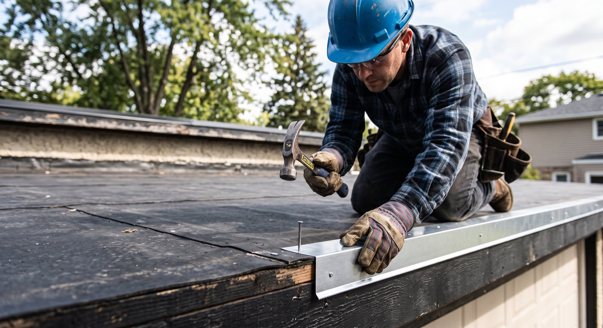
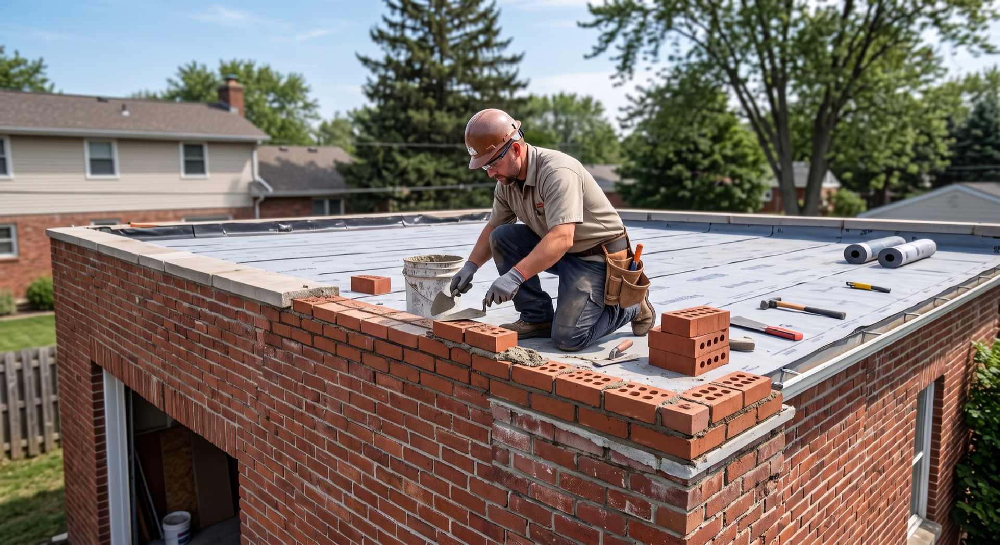

ориентир для стандартного гаража*
Казань и выезд за город
Ремонт мягкой
кровли гаража
Частичный и капитальный ремонт наплавляемой кровли без посредников. Материалы привезём сами, условия закрепим в договоре.
гарантия на работы — от 1 года
от консультации до готовой кровли
Быстрый ориентир
Посчитайте
свою крышу
Калькулятор показывает порядок стоимости по опубликованному прайсу. Точная смета зависит от состояния основания и примыканий.
01Без отправки данных
и скрытых форм
и скрытых форм
Что делаем
Кровля и всё,
что держит её сухой

Наплавляемая кровля
Частичный и капитальный ремонт гаражей, складов и небольших объектов.

Трубы и отливы
Монтаж металлических элементов, примыканий и защита края кровли.

Основание и кладка
Подготовка основания и восстановление разрушенных участков до укладки ковра.
Вид работЕдиницаОт
Кровля в 1 слойм²300 ₽
Кровля в 2 слоям²550 ₽
Демонтаж покрытиям²100 ₽
Ремонт стяжким²400 ₽
Праймированием²50 ₽
Монтаж отливовпог. м250 ₽
Отзывы
Заказчики на своей
новой крыше
Заказчики фотографируются на готовой кровле и выкладывают снимки в сообщество KROEM116. Здесь — кадры из публикаций. Нажмите на кадр для полноэкранного просмотра.
Казань, ГСК «Приволжский 3» — 5 снимков. Все фото — из публикаций vk.com/kroem116
 КKROEM116
КKROEM116Материалы
Подбираем
под основание
В публикациях KROEM116 указан Унифлекс ТКП. Для конкретной крыши материал и число слоёв подбираются после осмотра основания.
- Защитная крупнозернистая посыпка
- Битумно-полимерный вяжущий слой
- Прочная основа рулонного материала
Порядок работы
Четыре понятных шага
- 01
Консультация
Расскажите, где находится объект и что происходит с кровлей.
- 02
Осмотр и замер
Оцениваем старый ковёр, основание, примыкания и объём работ.
- 03
Смета и договор
Согласуем материал, порядок работ, расчёт и гарантию.
- 04
Монтаж и сдача
Выполняем ремонт и передаём готовую кровлю заказчику.
Нужно ли самому покупать материал?+
Нет. Объём рассчитывается после осмотра; материал и оборудование привозят на объект.
Всегда ли нужно снимать старую кровлю?+
Не всегда. Решение зависит от состояния старого ковра и основания.
Что входит в итоговую стоимость?+
Состав работ, материал и дополнительные операции фиксируются после осмотра и согласования.
Есть ли гарантия?+
Да. В материалах сообщества указана гарантия на работы от 1 года.
Журнал
Про кровлю —
по делу
Заметки мастера KROEM116 из сообщества: какой материал выбрать, когда делать ремонт, из чего складывается цена.
Контакты
Покажите
вашу крышу
Позвоните или отправьте фотографии в сообщество VK. Точный адрес офиса не опубликован, поэтому карта с выдуманным маркером на сайт не добавлена.